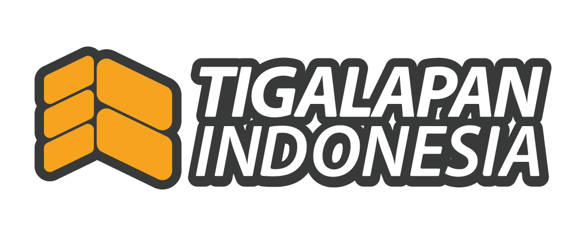

People
Karyawan, peran, shift, presensi, penugasan, performance.
- Employee & User
- Attendance, lembur & SPL
- Performance

Satu sistem, semua proses, data terpusat — gudang DC 38
Dalam perancanganKaryawan, peran, shift, presensi, penugasan, performance.
Data induk, stok, lokasi, aturan, dan jejak audit.
Eksekusi operasional di lapangan lewat tablet.
Penghubung dengan PPIC, intransit, dan MOKA.
Aplikasi operasional yang berjalan saat ini: W.O.S Tigalapan